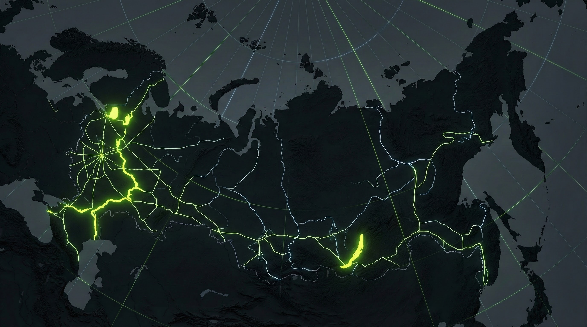

T-Rex · Aluminum Expedition Yachts
ПРАВО НА СВОБОДУ
ПРАВО НА СВОБОДУ
МАРШРУТА
Премиальные алюминиевые катера KARTEL Boats. Сделаны на Волге для тех, кто не ищет легких путей.
// LINEUP
ВИТРИНА T-REX
В наличии
T-Rex Flybridge
Верхняя палуба, панорама, свобода.
Готов к тесту
T-Rex Cruiser
Закрытый контур безопасности.
// PLATFORM 2026


КОНЦЕПТЫ БУДУЩЕГО
// DNA
Открыть Технологии
ТАНК ВО ФРАКЕ
Мы варим авиационный алюминий АМГ5М. Киль 12 мм, борт 5 мм. Внутри — тишина пятизвёздочного отеля.
12 мм
АМГ5М

СИБИРСКИЙ ИССЛЕДОВАТЕЛЬ
18-метровый стальной титан класса «река-море». Создан на стапелях KARTEL для миссий РГО в Арктике.
// CONTACT PERIMETER
БАЗЫ БАЗИРОВАНИЯ
MSK
SRT
// STORIES